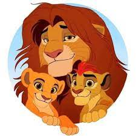

Lion King Movies
Overview
1.The Lion King 1994
The Lion King is a 1994 American animated musical drama film produced by Walt Disney Feature Animation and released by Walt Disney Pictures. It is the 32nd Disney animated feature film, and the fifth animated film produced during a period known as the Disney Renaissance. The Lion King was directed by Roger Allers and Rob Minkoff, produced by Don Hahn, and has a screenplay credited to Irene Mecchi, Jonathan Roberts, and Linda Woolverton. Its original songs were written by composer Elton John and lyricist Tim Rice, with a score by Hans Zimmer. The film features an ensemble voice cast that includes Matthew Broderick, James Earl Jones, Jeremy Irons, Jonathan Taylor Thomas, Moira Kelly, Nathan Lane, Ernie Sabella, Rowan Atkinson, Robert Guillaume, Madge Sinclair, Whoopi Goldberg, Cheech Marin, and Jim Cummings. The story takes place in a kingdom of lions in Africa and was influenced by the Biblical stories of Joseph and Moses, and William Shakespeare's Hamlet.
2.The Lion King II: Simba's Pride 1998

The Lion King II: Simba's Pride is a 1998 American animated direct-to-video romantic musical film and a sequel to Disney's 1994 animated feature film, The Lion King. The story takes place in a kingdom of lions in Africa and was influenced by William Shakespeare's Romeo and Juliet. According to co-director Darrell Rooney, the final draft gradually became a variation of Romeo and Juliet. The film centers around Simba and Nala's daughter, Kiara, who falls in love with Kov
3.Mufasa: The Lion King 2024

Mufasa: The Lion King is an upcoming American animated musical drama film produced by Walt Disney Pictures. It is a photorealistic computer-animated remake of Disney's traditionally animated 1994 film of the same name. The film is directed by Jon Favreau, written by Jeff Nathanson, and produced by Walt Disney Pictures. It stars the voices of Donald Glover, Seth Rogen, Chiwetel Ejiofor, Alfre Woodard, Billy Eichner, John Kani, John Oliver, and Beyoncé Knowles-Carter, as well as James Earl Jones reprising his role from the original film. The plot follows Simba, a young lion who must embrace his role as the rightful king of his native land following